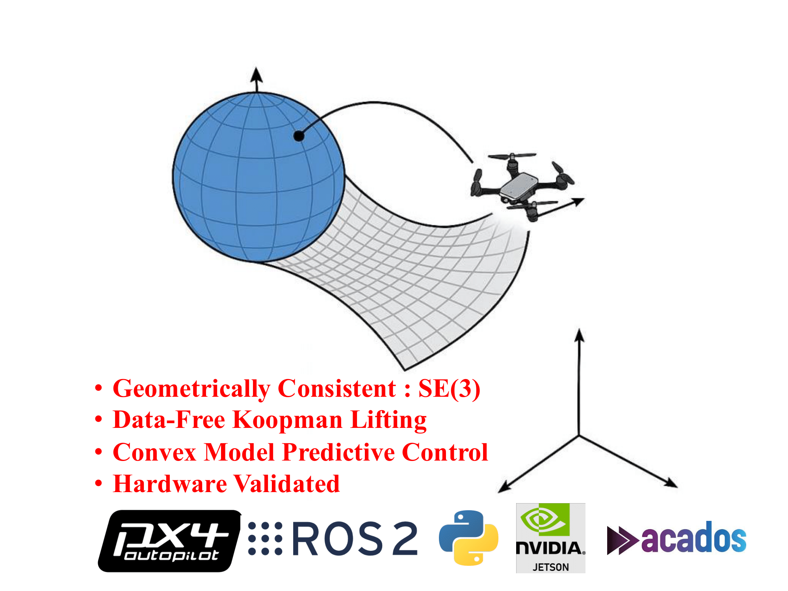
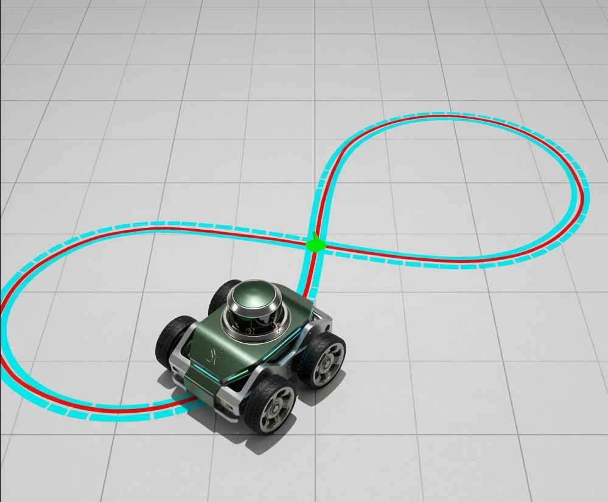
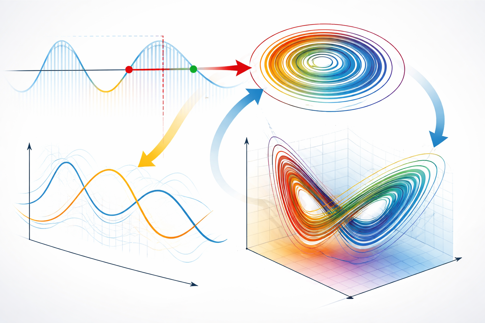

|
Santosh Rajkumar I am a PhD student in Mechanical Engineering at The Ohio State University, working at the intersection of control theory, robotics, and machine learning. I am advised by Dr. Debdipta Goswami. Email / CV / Bio / Scholar / Linkedin / Github
Santosh Rajkumar is a PhD student in
Mechanical Engineering at
The Ohio State University.
He received his MS in Mechanical Engineering from
Miami University in 2023 with full financial support.
Prior to his graduate studies, he worked as a Senior Engineer at
Indian Oil Corporation Limited,
a Fortune 150 energy company in India.
He earned his Bachelor's degree in Electrical Engineering from
National Institute of Technology Silchar, India, in 2017.
Earlier, he ranked 19th in the Indian state of Assam in the High School Leaving Examination,
among approximately a quarter million candidates.
|
{kind=link}
News
|
ResearchI am interested in robotics, control theory, and machine learning for dynamical systems. My work develops explainable, structured, and learning-based models of complex nonlinear systems to enable reliable prediction, estimation, and real-time model predictive control in robotic systems. |

 |
Real-Time Linear MPC for Quadrotors on SE (3): An Analytical Koopman-Based
Realization
Santosh M. Rajkumar Chengyu Yang, Yuliang Gu, Sheng Cheng, Naira Hovakimyan, Debdipta Goswami IEEE Robotics and Autmoation Letters (RA-L), 2025 Code Preprint Cite
@article{rajkumar2025real,
title={Real-Time Linear MPC for Quadrotors on SE (3): An Analytical Koopman-Based Realization},
author={Rajkumar, Santosh Mohan and Yang, Chengyu and Gu, Yuliang and Cheng, Sheng and Hovakimyan, Naira and Goswami, Debdipta},
journal={IEEE Robotics and Automation Letters},
volume={10},
number={12},
pages={13018--13025},
year={2025},
publisher={Institute of Electrical and Electronics Engineers Inc.}
}
Data-free Koopman linearization of quadrotor dynamics on SE(3) with geometrically consistent lifting. Enables a convex Koopman-based MPC scheme (KQ-LMPC) with 50–70% lower computational cost than NMPC while maintaining comparable tracking performance. First experimental validation of Koopman MPC for quadrotors using analytical lifting functions. |
|
 |
Geometry-Preserving Analytical Koopman Linearization of Mobile Robots on
SE(2)
Santosh Sajkumar, Debdipta Goswami Under Review Data-free, geometrically consistent Koopman linearization for wheeled mobile robots with rigorous approximation error bounds and singularity-free LQR tracking control. |
|
|
Learning Nonlinear Dynamics with Partial
Observations: Koopman Bilinear Approach with Neural Expectation Maximization
Santosh Sajkumar, Sriram Narayanan, Sameul E. Otto, Debdipta Goswami ACC 2025 late-breaking news poster (Manuscript Under preparation) Learning Koopman Bilinear Surrogate of unknown nonlinear systems from actuated partially observed trajectories using Neural Expectation-Maximization for reliable prediction and Model Predictive Control (MPC) for output regulation. |
|
 |
Data-Driven Koopman Learning for Nonlinear Time-Delayed Systems
Santosh Sajkumar, Debdipta Goswami Data-driven Koopman approach for infinite dimensional time-delayed systems governed by nonlinear retarded delay differential euqations with provable error bounds. |
Miscellanea |
|
Miami University
|
Academic Service |
Article Reviewer: American Control Conference, IFAC World Congress, IEEE ICRA, IEEE IROS, IEEE RA-L. |
Press/Media |
Ohio State MAE News. |
|
Modified from source. |